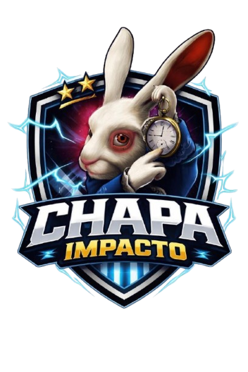

1. Melhorias na Estrutura da Escola
- Banheiro feminino: sabonete líquido, papel higiênico e absorventes.
- Banheiro masculino: papel higiênico, encanação e descargas.
- Portão, grama, limpeza e organização da escola.

As propostas abaixo foram organizadas em áreas para facilitar a leitura e mostrar o que a chapa quer realizar ao longo do ano.
Conheça os alunos que compõem a chapa impacto e estão prontos para representar a voz dos estudantes do Mauricio Coutinho Dutra!